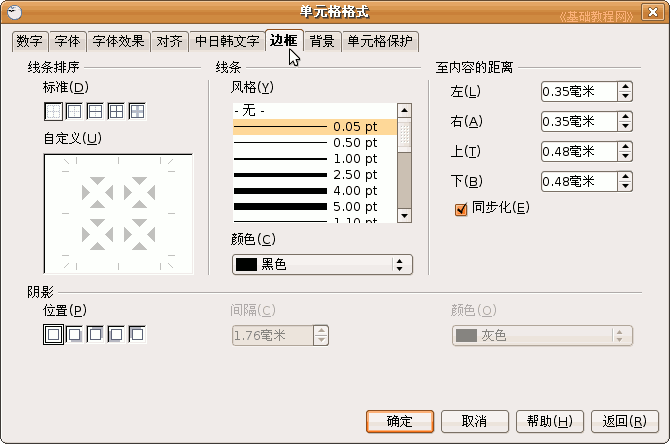

OpenOffice.org 教程之 Calc 电子表格
作者：TeliuTe 来源：基础教程网
十、表格边框 返回目录Calc中的表格线是一种参考线，如果要打印出来，还需要添加上边框线，下面我们来看一个练习；
1、启动Calc
1）点击点菜单“应用程序－办公－OpenOffice.org 电子表格”；
2）点菜单“文件－打开”命令，在自己的文件夹中找到上次保存的“成绩表”文件，打开它；
2、Calc表格
1）点菜单“文件－在网页浏览器中预览”命令，出来一个预览窗口，可以发现没有表格线；
2）回到表格窗口，我们需要加上边框，
从左上角A1单元格开始，拖动框选到右下角的85.33下面的单元格H6；
3）瞄准选中的黑色点右键，选“单元格格式”命令，在弹出的面板中选择上边的“边框”标签；

4）看一下左边的白色区域，现在里面还没有表格线，这儿对应表格内容，线条可以画横竖斜三种线条，
边框分为四周的外边框，和内部的边框线，
5）在右边的线条里，选择0.50pt的黑线条，在左边白色区域的四周分别点一下，画出外边框；
6）再点一下选中里面的一条内部线，然后在右边选0.05pt细线，再把里面横竖两条内部线点一下，点“确定”按钮，回到表格中；
这时候再点菜单“文件－在浏览器中预览”命令，就可以看到表格线了，保存一下文件；
本节学习了Calc中表格线的基本操作，如果你成功地完成了练习，请继续学习；
本教程由86团学校TeliuTe制作|著作权所有
基础教程网：http://teliute.org
美丽的校园……
转载和引用本站内容，请保留版权信息和本站链接。